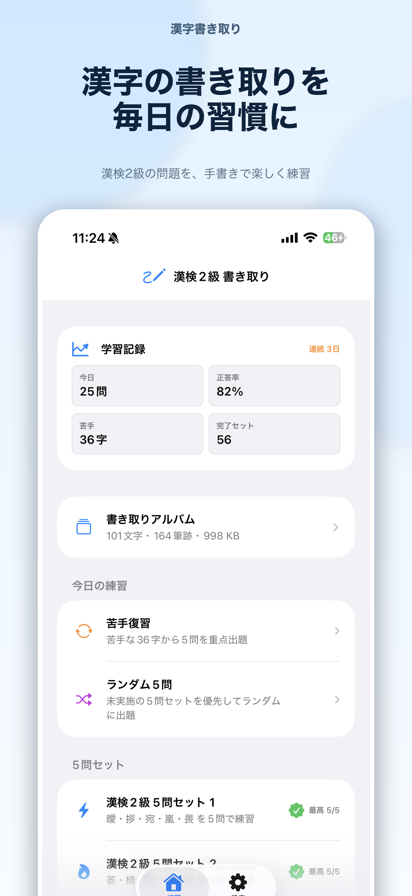
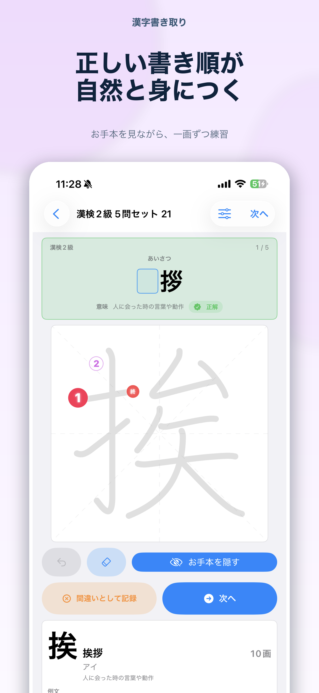
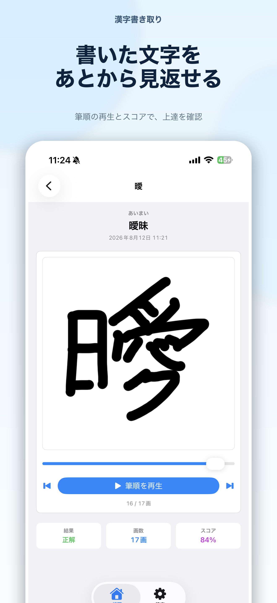
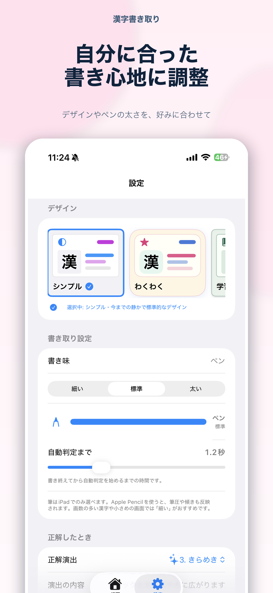

1セット5問の手書き練習
Five-question practice
読み・熟語・意味を手がかりに、空欄に入る漢字を一字書いて練習します。
Use the reading, word, and meaning as clues, then handwrite the missing character.
漢検2級相当を手書き練習Handwriting practice for 200 kanji
漢字は、実際に書くから身につく。
Kanji sticks when you write it yourself.
日本漢字能力検定2級相当の漢字200字を、指やApple Pencilで繰り返し練習。1セット5問で、形・筆順・画数などを自動採点します。
Practice 200 kanji at the Kanji Kentei Level 2 equivalent using your finger or Apple Pencil. Each five-question session scores character shape, stroke order, stroke count, and more.
Features
すきま時間の5問から、間違えた漢字の復習、過去の筆跡の振り返りまで、手書き学習をひとつのアプリで続けられます。
Move from a quick five-question session to focused review and stroke-by-stroke playback of your past writing, all in one app.
読み・熟語・意味を手がかりに、空欄に入る漢字を一字書いて練習します。
Use the reading, word, and meaning as clues, then handwrite the missing character.
形、筆順、画数などをもとに端末上で判定。手動で判定することもできます。
Evaluation runs on device using character shape, stroke order, stroke count, and other signals.
答えを確認した後は、お手本を見ながら一画ずつ進めて練習できます。
After checking the answer, trace the model character one stroke at a time.
間違えた漢字は自動で記録。「苦手復習」から覚えていない文字に集中できます。
Missed characters are recorded automatically so you can revisit them in a dedicated review session.
判定した筆跡をアルバムに保存。過去の文字を筆順ごと再生し、スコアも確認できます。
Keep evaluated writing in an album, replay its stroke order, and review the score later.
デザイン、ペンの太さ、自動判定までの時間を調整。iPadでは筆ツールとApple Pencilに対応します。
Adjust the theme, line width, and auto-evaluation delay. iPad also supports the brush tool and Apple Pencil.
Screenshots
学習記録、手書き採点、なぞり練習、苦手復習、筆順再生、設定画面の例です。
See progress, handwriting scoring, tracing, focused review, stroke replay, and customization.




Support & Privacy
学習記録と筆跡は端末内に保存され、主な練習機能はオフラインでも利用できます。
Learning progress and handwriting records stay on your device, and the primary practice features work offline.
お問い合わせ:Contact: naoki_hotta_dev@icloud.com
本アプリは個人制作の非公式学習アプリであり、公益財団法人 日本漢字能力検定協会が提供、監修、推奨するものではありません。「漢検」「漢字検定」は同協会の登録商標です。
This independently developed learning app is not provided, supervised, endorsed, or approved by The Japan Kanji Aptitude Testing Foundation.